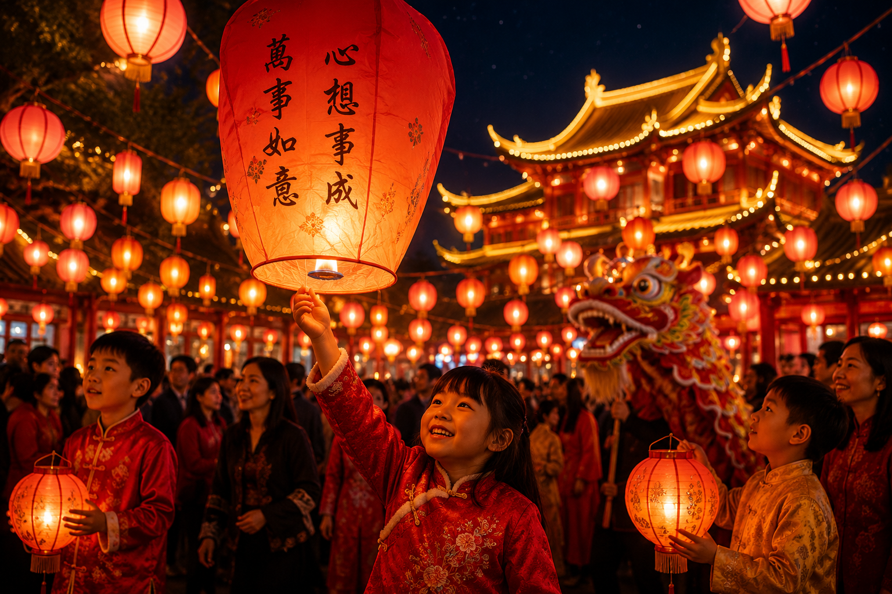
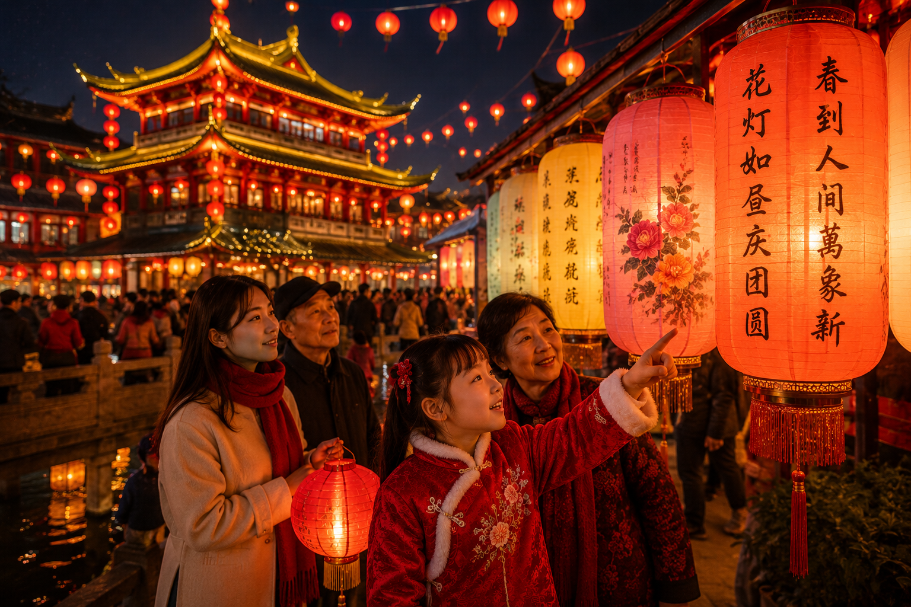

Tradiciones que iluminan generaciones
Costumbres ancestrales como los faroles, los acertijos y las celebraciones familiares.

Una noche de magia, cultura y esperanza
Vive la emoción del Festival de los Faroles entre luces, espectáculos y deseos bajo el cielo nocturno.
Descubre El Festival

Cultura y Celebracion
El Festival de los Faroles es una celebración llena de tradición, simbolismo y unión familiar. Cada año, miles de faroles iluminan la noche como representación de esperanza, prosperidad y buenos deseos para el futuro. Además de su valor cultural, el festival reúne música, danzas tradicionales, espectáculos y activida
Historia y Tradiciones
El Festival de los Faroles tiene su origen en antiguas tradiciones chinas y marca el final de las celebraciones del Año Nuevo Lunar. A lo largo de los siglos, esta festividad ha reunido a familias y comunidades para compartir momentos de alegría, encender faroles y mantener vivas costumbres llenas de simbolismo. Entre sus tradiciones más destacadas se encuentran las danzas del dragón, los acertijos en los faroles y la degustación de platos típicos.
